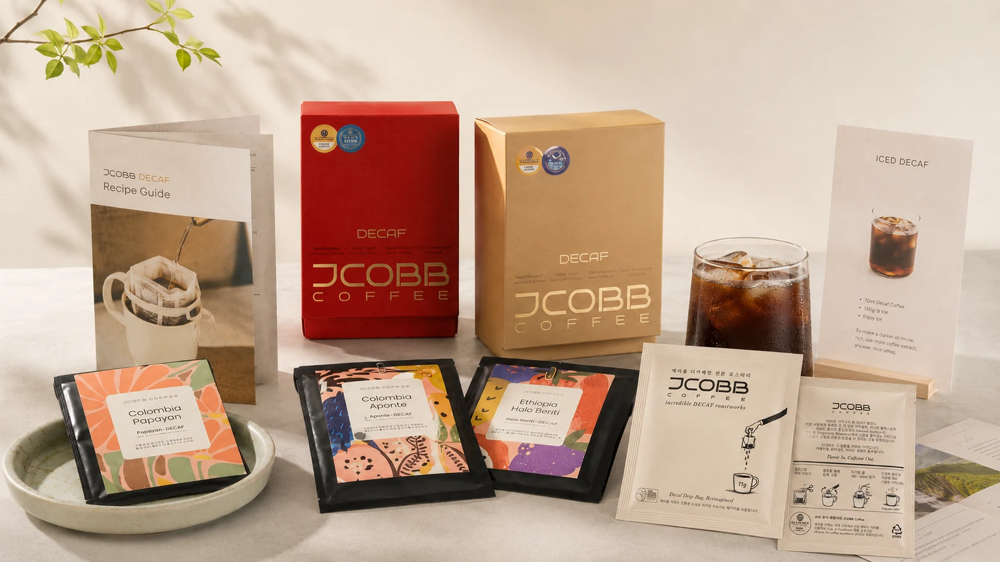

Inquiry
우리 카페에 맞는
디카페인 원두,
먼저 테스트하세요.
테스트빈 신청 시 원두 상담과 함께 시즌 메뉴 레시피, POP 활용 방향을 안내드립니다.
영업일 기준 1~2일 내 연락메뉴 적용 상담POP 활용 안내

Before Contact
처음 도입하는 카페도
괜찮습니다.
디카페인 메뉴 운영 경험이 없어도 상담 가능합니다. 원두 선택부터 메뉴 적용, 매장 노출 방식까지 함께 검토합니다.
원두
카페의 기존 메뉴와 고객층에 맞춰 추천
메뉴
기존 장비로 시작 가능한 레시피 중심
홍보
매장에서 바로 쓸 수 있는 POP 방향 안내